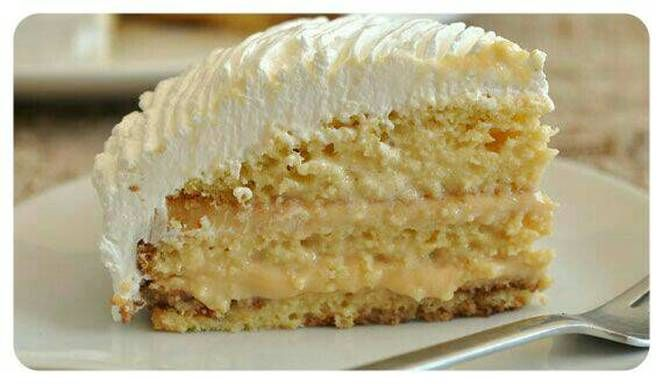

¿CÓMO HACER TORTA TRES LECHES? ¡ACÁ ESTA TU MEJOR OPCIÓN!

INGREDIENTES:
Para el bizcocho:
6 huevos
200g de azúcar
200 gramos de harina
1 cucharadita de esencia de vainilla
1 cucharadita de polvo para hornear
Para la crema:
1 lata grande de leche condensada
1 lata grande de leche evaporada
1 lata grande de crema de leche
Para el merengue:
3 unidades de clara de huevo
1 taza de azucar
PASOS:
Empezaremos nuestra tarta de tres leches fácil por la elaboración del bizcocho, pero antes precalenta el horno a 200 ºC. Agarra un recipiente y bati los huevos hasta que adquieran una textura espumosa, luego agrega el azúcar poco a poco y sin dejar de batir.
Deberás batir hasta que la mezcla triplique su volumen. Después, agrega la harina previamente tamizada junto con el polvo de hornear, bátela haciendo movimientos envolventes. Es aconsejable que la introduzcas poco a poco para que te sea más fácil integrarla. Incorpora también la esencia de vainilla y sigue mezclando.
Cuando tengas la masa del bizcocho tres leches fácil lista, unta un poco de manteca y harina en un molde de horno y ponela en él. Deberás hornearlo durante 25-30 minutos.Se recomienda pinchar el bizcocho con un palillo para asegurarse de que realmente está hecho por dentro una vez pasado el tiempo. Cuando esté listo, retíralo del horno y deja que se enfríe.
Mientras se hornea, podes preparar la crema de tres leches. Para esto, pone el contenido de las tres latas (condensada, evaporada y crema de leche) en un recipiente con la capacidad suficiente y bátilas. Es aconsejable usar una batidora, varilas eléctricas o licuadora.Con esta mezcla bañaremos el bizcocho en el mismo molde donde se horneó.
Ahora es el turno del merengue. Es muy sencillo, solo tenes que batir las claras a punto de nieve e ir agregando, poco a poco, el azúcar. Debes batir hasta que el merengue adquiera la consistencia adecuada.La cantidad de azúcar es al gusto, de manera que va probando la mezcla conforme la vas añadiendo para determinar si ha alcanzado el punto dulce que deseas. Este merengue lo usaremos para cubrir la parte superior de la torta 3 leches.
Cuando el bizcocho haya reposado, coloca la mezcla de tres leches sobre él y deja que se empape por completo. Es probable que la torta tarde aproximadamente una hora en impregnarse de la mezcla, todo dependerá del grosor que tenga.Esta torta de tres leches se puede dejar en el mismo molde donde se horneó, pero si lo deseas puedes desmoldarlo antes de bañarlo con la mezcla de tres leches, pasarlo a otro molde para presentación y, posteriormente, bañarlo con la crema
Cuando el bizcocho haya absorbido por completo la mezcla, ya podes cubrirlo con el merengue.Decorarlo a gusto.
Una vez terminada la torta tres leches, puedes adornarla con un poco de canela espolvoreada por encima, si gusta, o hacer un caramelo suave y dejar caer sobre el bizcocho de tres leches en forma de hilo fino.